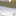

<!doctype html>
<html lang="en">
    <head>
        <meta charset="utf-8">
		<title> Peta Digital Potensi Perikanan Tangkap Kawasan Transmigrasi </title>
        <meta http-equiv="X-UA-Compatible" content="IE=edge">
        <meta name="viewport" content="initial-scale=1,user-scalable=no,maximum-scale=1,width=device-width">
        <meta name="mobile-web-app-capable" content="yes">
        <meta name="apple-mobile-web-app-capable" content="yes">
        <link rel="stylesheet" href="css/leaflet.css">
        <link rel="stylesheet" href="css/qgis2web.css"><link rel="stylesheet" href="css/fontawesome-all.min.css">
        <link rel="stylesheet" href="css/leaflet-search.css">
        <link rel="stylesheet" href="css/leaflet-control-geocoder.Geocoder.css">
        <link rel="stylesheet" href="css/leaflet-measure.css">
        <style>
        html, body, #map {
            width: 100%;
            height: 100%;
            padding: 0;
            margin: 0;
        }
        </style>
        <title></title>
    </head>
    <body>
        <div id="map">
        </div>
        <script src="js/qgis2web_expressions.js"></script>
        <script src="js/leaflet.js"></script>
        <script src="js/leaflet.rotatedMarker.js"></script>
        <script src="js/leaflet.pattern.js"></script>
        <script src="js/leaflet-hash.js"></script>
        <script src="js/Autolinker.min.js"></script>
        <script src="js/rbush.min.js"></script>
        <script src="js/labelgun.min.js"></script>
        <script src="js/labels.js"></script>
        <script src="js/leaflet-control-geocoder.Geocoder.js"></script>
        <script src="js/leaflet-measure.js"></script>
        <script src="js/leaflet-search.js"></script>
        <script src="data/KawasanTransmigrasi_1.js"></script>
        <script src="data/SatuanKawasanPengembangan_2.js"></script>
        <script src="data/PotensiPerikananTangkap_3.js"></script>
        <script src="data/TitikPotensiPerikanan_4.js"></script>
        <script src="data/PelabuhanPerikanan_5.js"></script>
        <script>
        var map = L.map('map', {
            zoomControl:true, maxZoom:28, minZoom:1
        })
        var hash = new L.Hash(map);
        map.attributionControl.setPrefix('<a href="https://github.com/tomchadwin/qgis2web" target="_blank">qgis2web</a> &middot; <a href="https://leafletjs.com" title="A JS library for interactive maps">Leaflet</a> &middot; <a href="https://qgis.org">QGIS</a>');
        var autolinker = new Autolinker({truncate: {length: 30, location: 'smart'}});
        var measureControl = new L.Control.Measure({
            position: 'topleft',
            primaryLengthUnit: 'feet',
            secondaryLengthUnit: 'miles',
            primaryAreaUnit: 'sqfeet',
            secondaryAreaUnit: 'sqmiles'
        });
        measureControl.addTo(map);
        document.getElementsByClassName('leaflet-control-measure-toggle')[0]
        .innerHTML = '';
        document.getElementsByClassName('leaflet-control-measure-toggle')[0]
        .className += ' fas fa-ruler';
        var bounds_group = new L.featureGroup([]);
        function setBounds() {
            if (bounds_group.getLayers().length) {
                map.fitBounds(bounds_group.getBounds());
            }
        }
        map.createPane('pane_googlehybrid_0');
        map.getPane('pane_googlehybrid_0').style.zIndex = 400;
        var layer_googlehybrid_0 = L.tileLayer('http://mt0.google.com/vt/lyrs=y&hl=en&x={x}&y={y}&z={z}', {
            pane: 'pane_googlehybrid_0',
            opacity: 1.0,
            attribution: '',
            minZoom: 1,
            maxZoom: 28,
            minNativeZoom: 0,
            maxNativeZoom: 18
        });
        layer_googlehybrid_0;
        map.addLayer(layer_googlehybrid_0);
        function pop_KawasanTransmigrasi_1(feature, layer) {
            var popupContent = '<table>\
                    <tr>\
                        <th scope="row">Nama Kawasan</th>\
                        <td>' + (feature.properties['NAMOBJ'] !== null ? autolinker.link(feature.properties['NAMOBJ'].toLocaleString()) : '') + '</td>\
                    </tr>\
                    <tr>\
                        <th scope="row">Luas Kawasan (Ha)</th>\
                        <td>' + (feature.properties['LUAS_HA'] !== null ? autolinker.link(feature.properties['LUAS_HA'].toLocaleString()) : '') + '</td>\
                    </tr>\
                    <tr>\
                        <th scope="row">Status</th>\
                        <td>' + (feature.properties['STATUS'] !== null ? autolinker.link(feature.properties['STATUS'].toLocaleString()) : '') + '</td>\
                    </tr>\
                    <tr>\
                        <th scope="row">Provinsi</th>\
                        <td>' + (feature.properties['PROVINSI'] !== null ? autolinker.link(feature.properties['PROVINSI'].toLocaleString()) : '') + '</td>\
                    </tr>\
                </table>';
            layer.bindPopup(popupContent, {maxHeight: 400});
        }

        function style_KawasanTransmigrasi_1_0() {
            return {
                pane: 'pane_KawasanTransmigrasi_1',
                opacity: 1,
                color: 'rgba(30,45,176,1.0)',
                dashArray: '1,5',
                lineCap: 'square',
                lineJoin: 'bevel',
                weight: 3.0,
                fillOpacity: 0,
                interactive: true,
            }
        }
        map.createPane('pane_KawasanTransmigrasi_1');
        map.getPane('pane_KawasanTransmigrasi_1').style.zIndex = 401;
        map.getPane('pane_KawasanTransmigrasi_1').style['mix-blend-mode'] = 'normal';
        var layer_KawasanTransmigrasi_1 = new L.geoJson(json_KawasanTransmigrasi_1, {
            attribution: '',
            interactive: true,
            dataVar: 'json_KawasanTransmigrasi_1',
            layerName: 'layer_KawasanTransmigrasi_1',
            pane: 'pane_KawasanTransmigrasi_1',
            onEachFeature: pop_KawasanTransmigrasi_1,
            style: style_KawasanTransmigrasi_1_0,
        });
        bounds_group.addLayer(layer_KawasanTransmigrasi_1);
        map.addLayer(layer_KawasanTransmigrasi_1);
        function pop_SatuanKawasanPengembangan_2(feature, layer) {
            var popupContent = '<table>\
                    <tr>\
                        <th scope="row">Kawasan</th>\
                        <td>' + (feature.properties['KWS_NORM'] !== null ? autolinker.link(feature.properties['KWS_NORM'].toLocaleString()) : '') + '</td>\
                    </tr>\
                    <tr>\
                        <th scope="row">SKP</th>\
                        <td>' + (feature.properties['SKP_IN'] !== null ? autolinker.link(feature.properties['SKP_IN'].toLocaleString()) : '') + '</td>\
                    </tr>\
                    <tr>\
                        <th scope="row">Pola Usaha Pokok SKP</th>\
                        <td>' + (feature.properties['Pola Usaha'] !== null ? autolinker.link(feature.properties['Pola Usaha'].toLocaleString()) : '') + '</td>\
                    </tr>\
                    <tr>\
                        <th scope="row">Video</th>\
                        <td>' + (feature.properties['Video'] !== null ? autolinker.link(feature.properties['Video'].toLocaleString()) : '') + '</td>\
                    </tr>\
                    <tr>\
                        <th scope="row">Jumlah Potensi Perikanan (Ton)</th>\
                        <td>' + (feature.properties['Potensi'] !== null ? autolinker.link(feature.properties['Potensi'].toLocaleString()) : '') + '</td>\
                    </tr>\
                    <tr>\
                        <th scope="row">Jenis Ikan</th>\
                        <td>' + (feature.properties['JenisIkan'] !== null ? autolinker.link(feature.properties['JenisIkan'].toLocaleString()) : '') + '</td>\
                    </tr>\
                </table>';
            layer.bindPopup(popupContent, {maxHeight: 400});
        }

        function style_SatuanKawasanPengembangan_2_0() {
            return {
                pane: 'pane_SatuanKawasanPengembangan_2',
                opacity: 1,
                color: 'rgba(193,25,28,1.0)',
                dashArray: '1,5',
                lineCap: 'square',
                lineJoin: 'bevel',
                weight: 3.0,
                fillOpacity: 0,
                interactive: true,
            }
        }
        map.createPane('pane_SatuanKawasanPengembangan_2');
        map.getPane('pane_SatuanKawasanPengembangan_2').style.zIndex = 402;
        map.getPane('pane_SatuanKawasanPengembangan_2').style['mix-blend-mode'] = 'normal';
        var layer_SatuanKawasanPengembangan_2 = new L.geoJson(json_SatuanKawasanPengembangan_2, {
            attribution: '',
            interactive: true,
            dataVar: 'json_SatuanKawasanPengembangan_2',
            layerName: 'layer_SatuanKawasanPengembangan_2',
            pane: 'pane_SatuanKawasanPengembangan_2',
            onEachFeature: pop_SatuanKawasanPengembangan_2,
            style: style_SatuanKawasanPengembangan_2_0,
        });
        bounds_group.addLayer(layer_SatuanKawasanPengembangan_2);
        map.addLayer(layer_SatuanKawasanPengembangan_2);
        function pop_PotensiPerikananTangkap_3(feature, layer) {
            var popupContent = '<table>\
                    <tr>\
                        <td colspan="2"><strong>JUMLAH POTENSI PERIKANAN TANGKAP</strong><br />' + (feature.properties['Judul'] !== null ? autolinker.link(feature.properties['Judul'].toLocaleString()) : '') + '</td>\
                    </tr>\
                    <tr>\
                        <td colspan="2">' + (feature.properties['Tabel'] !== null ? '' : '') + '</td>\
                    </tr>\
                    <tr>\
                        <th scope="row">Sumber</th>\
                        <td>' + (feature.properties['Sumber'] !== null ? autolinker.link(feature.properties['Sumber'].toLocaleString()) : '') + '</td>\
                    </tr>\
                    <tr>\
                        <th scope="row">Video</th>\
                        <td>' + (feature.properties['Video'] !== null ? autolinker.link(feature.properties['Video'].toLocaleString()) : '') + '</td>\
                    </tr>\
                </table>';
            layer.bindPopup(popupContent, {maxHeight: 400});
        }

        function style_PotensiPerikananTangkap_3_0() {
            return {
                pane: 'pane_PotensiPerikananTangkap_3',
                opacity: 1,
                color: 'rgba(35,35,35,0.0)',
                dashArray: '',
                lineCap: 'butt',
                lineJoin: 'miter',
                weight: 1.0, 
                fill: true,
                fillOpacity: 1,
                fillColor: 'rgba(141,90,153,0.0)',
                interactive: true,
            }
        }
        map.createPane('pane_PotensiPerikananTangkap_3');
        map.getPane('pane_PotensiPerikananTangkap_3').style.zIndex = 403;
        map.getPane('pane_PotensiPerikananTangkap_3').style['mix-blend-mode'] = 'normal';
        var layer_PotensiPerikananTangkap_3 = new L.geoJson(json_PotensiPerikananTangkap_3, {
            attribution: '',
            interactive: true,
            dataVar: 'json_PotensiPerikananTangkap_3',
            layerName: 'layer_PotensiPerikananTangkap_3',
            pane: 'pane_PotensiPerikananTangkap_3',
            onEachFeature: pop_PotensiPerikananTangkap_3,
            style: style_PotensiPerikananTangkap_3_0,
        });
        bounds_group.addLayer(layer_PotensiPerikananTangkap_3);
        map.addLayer(layer_PotensiPerikananTangkap_3);
        function pop_TitikPotensiPerikanan_4(feature, layer) {
            var popupContent = '<table>\
                    <tr>\
                        <td colspan="2"><strong>TITIK POTENSI PERIKANAN TANGKAP</strong><br />' + (feature.properties['TitikPote'] !== null ? autolinker.link(feature.properties['TitikPote'].toLocaleString()) : '') + '</td>\
                    </tr>\
                    <tr>\
                        <th scope="row">Bulan</th>\
                        <td>' + (feature.properties['Bulan'] !== null ? autolinker.link(feature.properties['Bulan'].toLocaleString()) : '') + '</td>\
                    </tr>\
                    <tr>\
                        <th scope="row">Latitude</th>\
                        <td>' + (feature.properties['Latitude'] !== null ? autolinker.link(feature.properties['Latitude'].toLocaleString()) : '') + '</td>\
                    </tr>\
                    <tr>\
                        <th scope="row">Longitude</th>\
                        <td>' + (feature.properties['Longitude'] !== null ? autolinker.link(feature.properties['Longitude'].toLocaleString()) : '') + '</td>\
                    </tr>\
                    <tr>\
                        <th scope="row">Pelabuhan Terdekat</th>\
                        <td>' + (feature.properties['Pel_Terdek'] !== null ? autolinker.link(feature.properties['Pel_Terdek'].toLocaleString()) : '') + '</td>\
                    </tr>\
                    <tr>\
                        <th scope="row">Jarak</th>\
                        <td>' + (feature.properties['Jarak'] !== null ? autolinker.link(feature.properties['Jarak'].toLocaleString()) : '') + '</td>\
                    </tr>\
                    <tr>\
                        <th scope="row">Tahun Data</th>\
                        <td>' + (feature.properties['Tahun Data'] !== null ? autolinker.link(feature.properties['Tahun Data'].toLocaleString()) : '') + '</td>\
                    </tr>\
                </table>';
            layer.bindPopup(popupContent, {maxHeight: 400});
        }

        function style_TitikPotensiPerikanan_4_0() {
            return {
                pane: 'pane_TitikPotensiPerikanan_4',
        rotationAngle: 0.0,
        rotationOrigin: 'center center',
        icon: L.icon({
            iconUrl: 'markers/Ikon-Ikan.svg',
            iconSize: [37.99999999999997, 37.99999999999997]
        }),
                interactive: true,
            }
        }
        map.createPane('pane_TitikPotensiPerikanan_4');
        map.getPane('pane_TitikPotensiPerikanan_4').style.zIndex = 404;
        map.getPane('pane_TitikPotensiPerikanan_4').style['mix-blend-mode'] = 'normal';
        var layer_TitikPotensiPerikanan_4 = new L.geoJson(json_TitikPotensiPerikanan_4, {
            attribution: '',
            interactive: true,
            dataVar: 'json_TitikPotensiPerikanan_4',
            layerName: 'layer_TitikPotensiPerikanan_4',
            pane: 'pane_TitikPotensiPerikanan_4',
            onEachFeature: pop_TitikPotensiPerikanan_4,
            pointToLayer: function (feature, latlng) {
                var context = {
                    feature: feature,
                    variables: {}
                };
                return L.marker(latlng, style_TitikPotensiPerikanan_4_0(feature));
            },
        });
        bounds_group.addLayer(layer_TitikPotensiPerikanan_4);
        map.addLayer(layer_TitikPotensiPerikanan_4);
        function pop_PelabuhanPerikanan_5(feature, layer) {
            var popupContent = '<table>\
                    <tr>\
                        <th scope="row">Nama Pelabuhan</th>\
                        <td>' + (feature.properties['Nama_Pel'] !== null ? autolinker.link(feature.properties['Nama_Pel'].toLocaleString()) : '') + '</td>\
                    </tr>\
                    <tr>\
                        <th scope="row">Kabupaten</th>\
                        <td>' + (feature.properties['Lokasi'] !== null ? autolinker.link(feature.properties['Lokasi'].toLocaleString()) : '') + '</td>\
                    </tr>\
                    <tr>\
                        <th scope="row">Keterangan</th>\
                        <td>' + (feature.properties['Keterangan'] !== null ? autolinker.link(feature.properties['Keterangan'].toLocaleString()) : '') + '</td>\
                    </tr>\
                    <tr>\
                        <th scope="row">Jarak</th>\
                        <td>' + (feature.properties['Jarak (Km)'] !== null ? autolinker.link(feature.properties['Jarak (Km)'].toLocaleString()) : '') + '</td>\
                    </tr>\
                    <tr>\
                        <th scope="row">Volume Produksi 2019</th>\
                        <td>' + (feature.properties['Produksi19'] !== null ? autolinker.link(feature.properties['Produksi19'].toLocaleString()) : '') + '</td>\
                    </tr>\
                    <tr>\
                        <th scope="row">Volume Produksi 2020</th>\
                        <td>' + (feature.properties['Produksi20'] !== null ? autolinker.link(feature.properties['Produksi20'].toLocaleString()) : '') + '</td>\
                    </tr>\
                    <tr>\
                        <th scope="row">Volume Produksi 2021</th>\
                        <td>' + (feature.properties['Produksi21'] !== null ? autolinker.link(feature.properties['Produksi21'].toLocaleString()) : '') + '</td>\
                    </tr>\
                </table>';
            layer.bindPopup(popupContent, {maxHeight: 400});
        }

        function style_PelabuhanPerikanan_5_0() {
            return {
                pane: 'pane_PelabuhanPerikanan_5',
        rotationAngle: 0.0,
        rotationOrigin: 'center center',
        icon: L.icon({
            iconUrl: 'markers/image2vector.svg',
            iconSize: [30.400000000000013, 30.400000000000013]
        }),
                interactive: true,
            }
        }
        map.createPane('pane_PelabuhanPerikanan_5');
        map.getPane('pane_PelabuhanPerikanan_5').style.zIndex = 405;
        map.getPane('pane_PelabuhanPerikanan_5').style['mix-blend-mode'] = 'normal';
        var layer_PelabuhanPerikanan_5 = new L.geoJson(json_PelabuhanPerikanan_5, {
            attribution: '',
            interactive: true,
            dataVar: 'json_PelabuhanPerikanan_5',
            layerName: 'layer_PelabuhanPerikanan_5',
            pane: 'pane_PelabuhanPerikanan_5',
            onEachFeature: pop_PelabuhanPerikanan_5,
            pointToLayer: function (feature, latlng) {
                var context = {
                    feature: feature,
                    variables: {}
                };
                return L.marker(latlng, style_PelabuhanPerikanan_5_0(feature));
            },
        });
        bounds_group.addLayer(layer_PelabuhanPerikanan_5);
        map.addLayer(layer_PelabuhanPerikanan_5);
        var osmGeocoder = new L.Control.Geocoder({
            collapsed: true,
            position: 'topleft',
            text: 'Search',
            title: 'Testing'
        }).addTo(map);
        document.getElementsByClassName('leaflet-control-geocoder-icon')[0]
        .className += ' fa fa-search';
        document.getElementsByClassName('leaflet-control-geocoder-icon')[0]
        .title += 'Search for a place';
        var baseMaps = {};
        L.control.layers(baseMaps,{' Pelabuhan Perikanan': layer_PelabuhanPerikanan_5,' Titik Potensi Perikanan': layer_TitikPotensiPerikanan_4,' Potensi Perikanan Tangkap': layer_PotensiPerikananTangkap_3,' Satuan Kawasan Pengembangan': layer_SatuanKawasanPengembangan_2,' Kawasan Transmigrasi': layer_KawasanTransmigrasi_1,"google hybrid": layer_googlehybrid_0,}).addTo(map);
        setBounds();
        map.addControl(new L.Control.Search({
            layer: layer_KawasanTransmigrasi_1,
            initial: false,
            hideMarkerOnCollapse: true,
            propertyName: 'NAMOBJ'}));
        document.getElementsByClassName('search-button')[0].className +=
         ' fa fa-binoculars';
        </script>
    </body>
</html>
